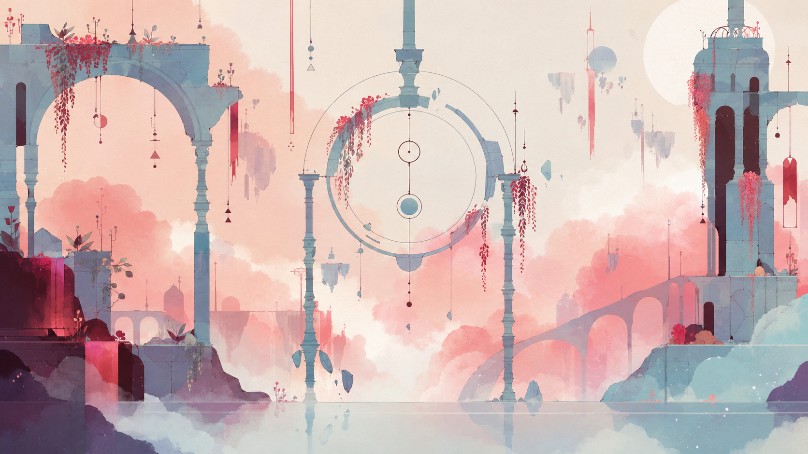

На следующем такте

Исток
Играйте сами · клавиши A S D F G H J
Выберите голоса и нажмите «Воспроизвести». MELODY начинает в режиме «Вручную».

Играйте сами · клавиши A S D F G H J
Выберите голоса и нажмите «Воспроизвести». MELODY начинает в режиме «Вручную».